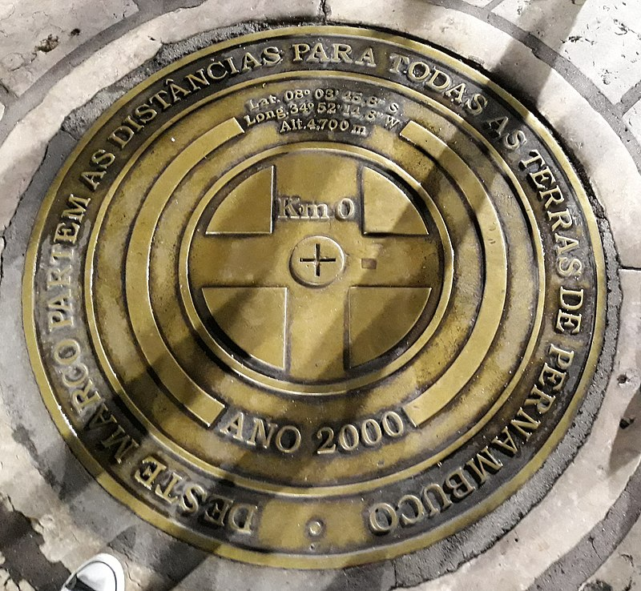
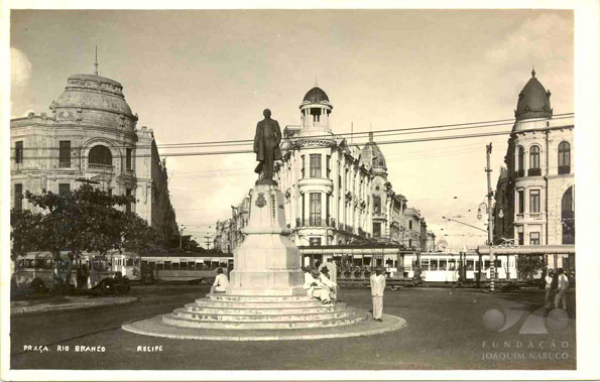
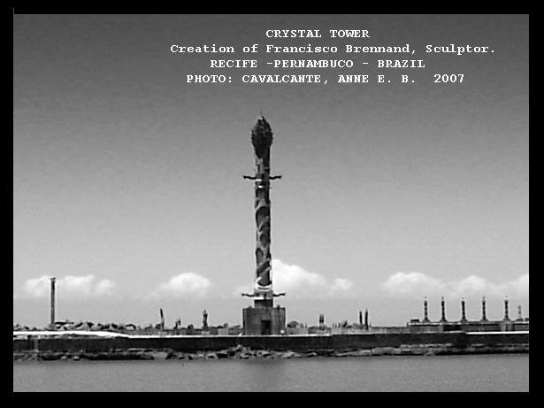

Praça do Marco Zero não é apenas o epicentro cultural de Recife, mas também o início de todos os caminhos de Pernambuco.
Praça do Marco Zero, na verdade, é um apelido – o local se chama Praça Barão do Rio Branco e está localizada no Bairro do Recife, o Centro Histórico da cidade, que também atende por outra alcunha, mais popular: Recife Antigo.
Além do Marco Zero, existe na praça um busto do Barão do Rio Branco, escultura do francês Félix Charpeutier, colocada ali em 1917.
De frente para a Praça do Marco Zero, sobre um dique natural que protege um estuário do Rio Capibaribe, foi construído em 2000 o Parque das Esculturas Francisco Brennand, que se tornou uma das maiores atrações turísticas da cidade.
Inaugurado em 2012, o Centro de Artesanato de Pernambuco rapidamente se tornou uma das referências da Praça do Marco Zero, tanto para turistas quanto para os moradores de Recife.